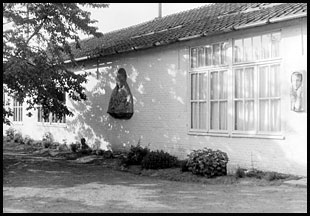

In 1938 kon Herman De Cuyper zich — dankzij het mecenaat van juffrouw Elsa Gevaert (°1902–1999) — vestigen in zijn nieuw gebouwde atelierwoonst aan de Mechelsesteenweg 249 te Blaasveld. Het langwerpige huis zonder verdieping ligt op een honderdtal meter afstand van de provinciale weg en is omgeven door een moestuin met boomgaard. Hier leefde de kunstenaar en zijn groeiend gezin in harmonie met de natuur.
Een kleine toonzaal maakte van in het begin integrerend deel uit van het complex en bevatte de beeldhouwwerken die hij tot dan had gerealiseerd. De grotere gipsen modellen vonden een plaatsje in de belendende tuin. Ondanks de ravage aangericht door een V1-bom op het einde van de Tweede Wereldoorlog, bleef een representatief bestand van sculpturen in gips, steen en hout bewaard in de ouderlijke woonst.
Rond 1974 vatte de oudste dochter Celestina De Cuyper (°1935–2007) het plan op om het aanzienlijke oeuvre breder te behuizen en publiek toegankelijk te maken. Een museale nieuwbouw drong zich op als uitbreiding van de reeds bestaande atelierwoonst.
Het museumgebouw beslaat een totale oppervlakte van 400 vierkante meter en werd over een periode van vier jaar door de kunstenaar en zijn kinderen eigenhandig gebouwd. Vanaf 1978 kon met de binnenafwerking begonnen worden en verhuisden sokkels en sculpturen langzamerhand naar hun nieuwe stelplaats.
Toch zou het nog tot 1984 duren — het jaar waarin de tachtigste verjaardag van de kunstenaar werd gevierd — voor het museum permanent voor het publiek werd opengesteld. De familiale erfgoedcel Museum Herman De Cuyper omvat momenteel een collectie van enkele honderden beelden, schilderijen en tekeningen.